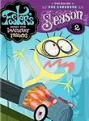

Foster's Home for Imaginary Friends
Stephen Klancher
...has seen 1
...has seen 0 hours
...has not seen 1.4 hours

Timeline
Most Recent:
The Big Lablooski
...has seen 1
...has seen 0 hours
...has not seen 1.4 hours
Timeline
Most Recent:
The Big Lablooski


Partying Is Such Sweet Soiree (2005) Airs on 2005-01-21
S2 - E1 of Foster's Home for Imaginary Friends
S2 - E1 of Foster's Home for Imaginary Friends
Where There's a Wilt There's a Way / Everyone Knows It's Bendy (2005) Airs on 2005-02-04
S2 - E3 of Foster's Home for Imaginary Friends
S2 - E3 of Foster's Home for Imaginary Friends
Sight For Sore Eyes / Bloo's Brothers (2005) Airs on 2005-03-04
S2 - E4 of Foster's Home for Imaginary Friends
S2 - E4 of Foster's Home for Imaginary Friends
Imposter's Home For Um...Make 'Em Up Pals (2005) Airs on 2005-09-16
S3 - E4 of Foster's Home for Imaginary Friends
S3 - E4 of Foster's Home for Imaginary Friends
Challenge of the Superfriends (2006) Airs on 2006-04-28
S4 - E1 of Foster's Home for Imaginary Friends
S4 - E1 of Foster's Home for Imaginary Friends
I Only Have Surprise For You (2006) Airs on 2006-07-27
S4 - E6 of Foster's Home for Imaginary Friends
S4 - E6 of Foster's Home for Imaginary Friends
Something Old, Something Bloo (2007) Airs on 2007-06-15
S5 - E4 of Foster's Home for Imaginary Friends
S5 - E4 of Foster's Home for Imaginary Friends
''The Bloo Superdude and The Magic Potato of Power'' (2007) Airs on 2007-09-10
S5 - E5 of Foster's Home for Imaginary Friends
S5 - E5 of Foster's Home for Imaginary Friends
Jackie Khones and the Case of the Overdue Library Crook (2008) Airs on 2008-03-13
S6 - E1 of Foster's Home for Imaginary Friends
S6 - E1 of Foster's Home for Imaginary Friends
Race for Your Life, Mac and Bloo (2008) Airs on 2008-05-29
S6 - E5 of Foster's Home for Imaginary Friends
S6 - E5 of Foster's Home for Imaginary Friends
Destination: Imagination (2) (2009) Airs on 2009-05-03
S6 - E7 of Foster's Home for Imaginary Friends
S6 - E7 of Foster's Home for Imaginary Friends
Destination: Imagination (3) (2009) Airs on 2009-05-03
S6 - E8 of Foster's Home for Imaginary Friends
S6 - E8 of Foster's Home for Imaginary Friends
The Bloo Superdude and the Great Creator of Everything's Awesome Ceremony of Fun That He's Not Invited To (2009) Airs on 2009-05-03
S6 - E9 of Foster's Home for Imaginary Friends
S6 - E9 of Foster's Home for Imaginary Friends